Angles
A golfer swings to hit a ball over a sand trap and onto the green. An airline pilot maneuvers a plane toward a narrow runway. A dress designer creates the latest fashion. What do they all have in common? They all work with angles, and so do all of us at one time or another. Sometimes we need to measure angles exactly with instruments. Other times we estimate them or judge them by eye. Either way, the proper angle can make the difference between success and failure in many undertakings. In this section, we will examine properties of angles.
Drawing Angles in Standard Position
Properly defining an angle first requires that we define a ray. A ray consists of one point on a line and all points extending in one direction from that point. The first point is called the endpoint of the ray. We can refer to a specific ray by stating its endpoint and any other point on it. The ray in Figure 1 can be named as ray EF, or in symbol form
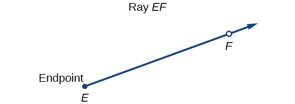
An angle is the union of two rays having a common endpoint. The endpoint is called the vertex of the angle, and the two rays are the sides of the angle. The angle in Figure 2 is formed from and Angles can be named using a point on each ray and the vertex, such as angle DEF, or in symbol form
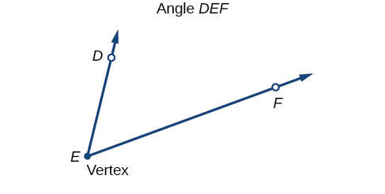
Greek letters are often used as variables for the measure of an angle. Table 1 is a list of Greek letters commonly used to represent angles, and a sample angle is shown in Figure 3.
| theta | phi | alpha | beta | gamma |
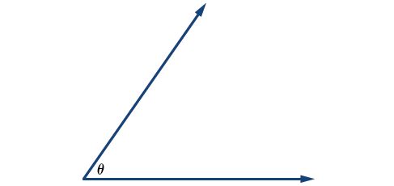
Angle creation is a dynamic process. We start with two rays lying on top of one another. We leave one fixed in place, and rotate the other. The fixed ray is the initial side, and the rotated ray is the terminal side. In order to identify the different sides, we indicate the rotation with a small arc and arrow close to the vertex as in Figure 4.
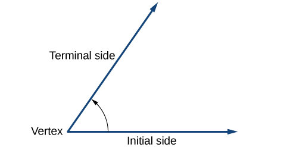
As we discussed at the beginning of the section, there are many applications for angles, but in order to use them correctly, we must be able to measure them. The measure of an angle is the amount of rotation from the initial side to the terminal side. Probably the most familiar unit of angle measurement is the degree. One degree is of a circular rotation, so a complete circular rotation contains 360 degrees. An angle measured in degrees should always include the unit “degrees” after the number, or include the degree symbol °. For example, 90 degrees = 90°.
To formalize our work, we will begin by drawing angles on an x-y coordinate plane. Angles can occur in any position on the coordinate plane, but for the purpose of comparison, the convention is to illustrate them in the same position whenever possible. An angle is in standard position if its vertex is located at the origin, and its initial side extends along the positive x-axis. See Figure 5.
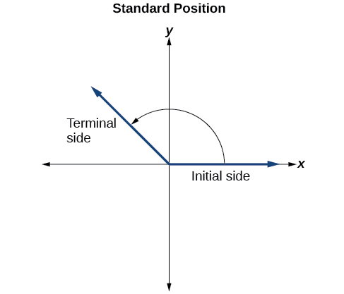
If the angle is measured in a counterclockwise direction from the initial side to the terminal side, the angle is said to be a positive angle. If the angle is measured in a clockwise direction, the angle is said to be a negative angle.
Drawing an angle in standard position always starts the same way—draw the initial side along the positive x-axis. To place the terminal side of the angle, we must calculate the fraction of a full rotation the angle represents. We do that by dividing the angle measure in degrees by 360°. For example, to draw a 90° angle, we calculate that So, the terminal side will be one-fourth of the way around the circle, moving counterclockwise from the positive x-axis. To draw a 360° angle, we calculate that So the terminal side will be 1 complete rotation around the circle, moving counterclockwise from the positive x-axis. In this case, the initial side and the terminal side overlap. See Figure 6.
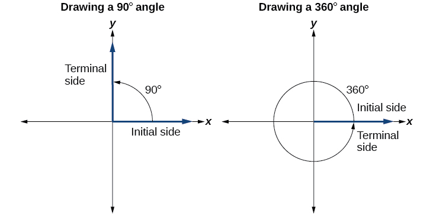
Since we define an angle in standard position by its initial side, we have a special type of angle whose terminal side lies on an axis, a quadrantal angle. This type of angle can have a measure of 0°, 90°, 180°, 270° or 360°. See Figure 7.
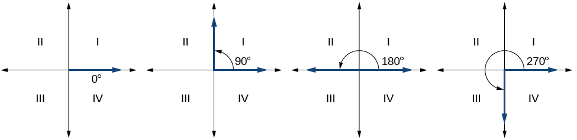
Drawing an Angle in Standard Position Measured in Degrees
- ⓐ Sketch an angle of 30° in standard position.
- ⓑ Sketch an angle of −135° in standard position.
Solution
- ⓐ Divide the angle measure by 360°.
To rewrite the fraction in a more familiar fraction, we can recognize that
One-twelfth equals one-third of a quarter, so by dividing a quarter rotation into thirds, we can sketch a line at 30° as in Figure 8.
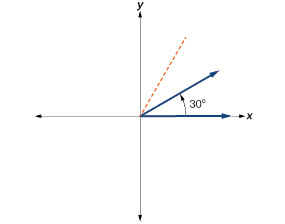
Figure 8 - ⓑ Divide the angle measure by 360°.
In this case, we can recognize that
Negative three-eighths is one and one-half times a quarter, so we place a line by moving clockwise one full quarter and one-half of another quarter, as in Figure 9.
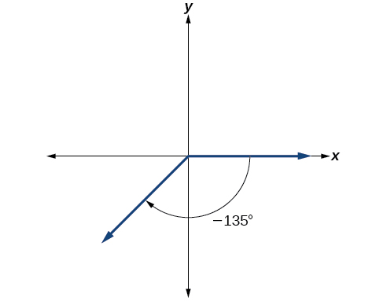
Figure 9
Converting Between Degrees and Radians
Dividing a circle into 360 parts is an arbitrary choice, although it creates the familiar degree measurement. We may choose other ways to divide a circle. To find another unit, think of the process of drawing a circle. Imagine that you stop before the circle is completed. The portion that you drew is referred to as an arc. An arc may be a portion of a full circle, a full circle, or more than a full circle, represented by more than one full rotation. The length of the arc around an entire circle is called the circumference of that circle.
The circumference of a circle is If we divide both sides of this equation by we create the ratio of the circumference to the radius, which is always regardless of the length of the radius. So the circumference of any circle is times the length of the radius. That means that if we took a string as long as the radius and used it to measure consecutive lengths around the circumference, there would be room for six full string-lengths and a little more than a quarter of a seventh, as shown in Figure 10.
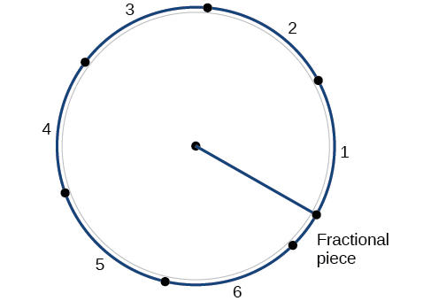
This brings us to our new angle measure. One radian is the measure of a central angle of a circle that intercepts an arc equal in length to the radius of that circle. A central angle is an angle formed at the center of a circle by two radii. Because the total circumference equals times the radius, a full circular rotation is radians. So
See Figure 11. Note that when an angle is described without a specific unit, it refers to radian measure. For example, an angle measure of 3 indicates 3 radians. In fact, radian measure is dimensionless, since it is the quotient of a length (circumference) divided by a length (radius) and the length units cancel out.
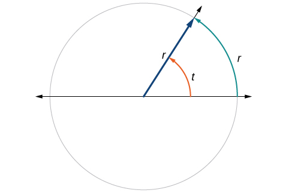
Relating Arc Lengths to Radius
An arc length is the length of the curve along the arc. Just as the full circumference of a circle always has a constant ratio to the radius, the arc length produced by any given angle also has a constant relation to the radius, regardless of the length of the radius.
This ratio, called the radian measure, is the same regardless of the radius of the circle—it depends only on the angle. This property allows us to define a measure of any angle as the ratio of the arc length to the radius See Figure 12.
If then
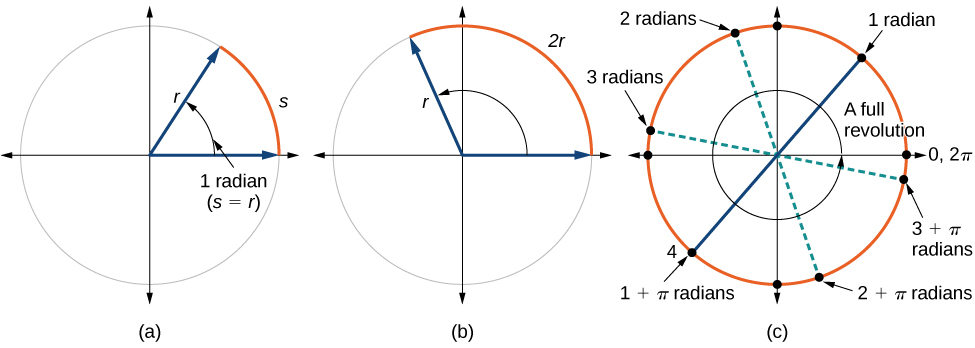
To elaborate on this idea, consider two circles, one with radius 2 and the other with radius 3. Recall the circumference of a circle is where is the radius. The smaller circle then has circumference and the larger has circumference Now we draw a 45° angle on the two circles, as in Figure 13.
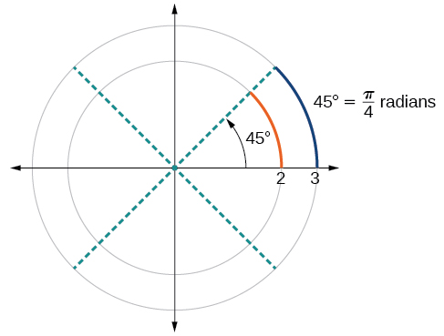
Notice what happens if we find the ratio of the arc length divided by the radius of the circle.
Since both ratios are the angle measures of both circles are the same, even though the arc length and radius differ.
Using Radians
Because radian measure is the ratio of two lengths, it is a unitless measure. For example, in Figure 12, suppose the radius were 2 inches and the distance along the arc were also 2 inches. When we calculate the radian measure of the angle, the “inches” cancel, and we have a result without units. Therefore, it is not necessary to write the label “radians” after a radian measure, and if we see an angle that is not labeled with “degrees” or the degree symbol, we can assume that it is a radian measure.
Considering the most basic case, the unit circle (a circle with radius 1), we know that 1 rotation equals 360 degrees, 360°. We can also track one rotation around a circle by finding the circumference, and for the unit circle These two different ways to rotate around a circle give us a way to convert from degrees to radians.
Identifying Special Angles Measured in Radians
In addition to knowing the measurements in degrees and radians of a quarter revolution, a half revolution, and a full revolution, there are other frequently encountered angles in one revolution of a circle with which we should be familiar. It is common to encounter multiples of 30, 45, 60, and 90 degrees. These values are shown in Figure 14. Memorizing these angles will be very useful as we study the properties associated with angles.
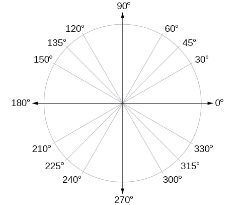
Now, we can list the corresponding radian values for the common measures of a circle corresponding to those listed in Figure 14, which are shown in Figure 15. Be sure you can verify each of these measures.
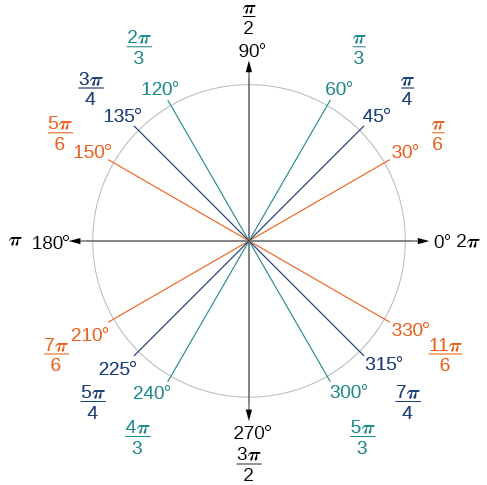
Finding a Radian Measure
Find the radian measure of one-third of a full rotation.
Solution
For any circle, the arc length along such a rotation would be one-third of the circumference. We know that
So,
The radian measure would be the arc length divided by the radius.
Converting between Radians and Degrees
Because degrees and radians both measure angles, we need to be able to convert between them. We can easily do so using a proportion.
This proportion shows that the measure of angle in degrees divided by 180 equals the measure of angle in radians divided by Or, phrased another way, degrees is to 180 as radians is to
Converting Radians to Degrees
Convert each radian measure to degrees.
- ⓐ
- ⓑ 3
Solution
Because we are given radians and we want degrees, we should set up a proportion and solve it.
- ⓐ We use the proportion, substituting the given information.
- ⓑ We use the proportion, substituting the given information.
Converting Degrees to Radians
Convert degrees to radians.
Solution
In this example, we start with degrees and want radians, so we again set up a proportion and solve it, but we substitute the given information into a different part of the proportion.
Finding Coterminal Angles
Converting between degrees and radians can make working with angles easier in some applications. For other applications, we may need another type of conversion. Negative angles and angles greater than a full revolution are more awkward to work with than those in the range of 0° to 360°, or 0 to It would be convenient to replace those out-of-range angles with a corresponding angle within the range of a single revolution.
It is possible for more than one angle to have the same terminal side. Look at Figure 16. The angle of 140° is a positive angle, measured counterclockwise. The angle of –220° is a negative angle, measured clockwise. But both angles have the same terminal side. If two angles in standard position have the same terminal side, they are coterminal angles. Every angle greater than 360° or less than 0° is coterminal with an angle between 0° and 360°, and it is often more convenient to find the coterminal angle within the range of 0° to 360° than to work with an angle that is outside that range.
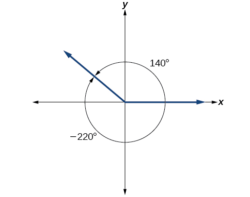
Any angle has infinitely many coterminal angles because each time we add 360° to that angle—or subtract 360° from it—the resulting value has a terminal side in the same location. For example, 100° and 460° are coterminal for this reason, as is −260°. Recognizing that any angle has infinitely many coterminal angles explains the repetitive shape in the graphs of trigonometric functions.
An angle’s reference angle is the measure of the smallest, positive, acute angle formed by the terminal side of the angle and the horizontal axis. Thus positive reference angles have terminal sides that lie in the first quadrant and can be used as models for angles in other quadrants. See Figure 17 for examples of reference angles for angles in different quadrants.
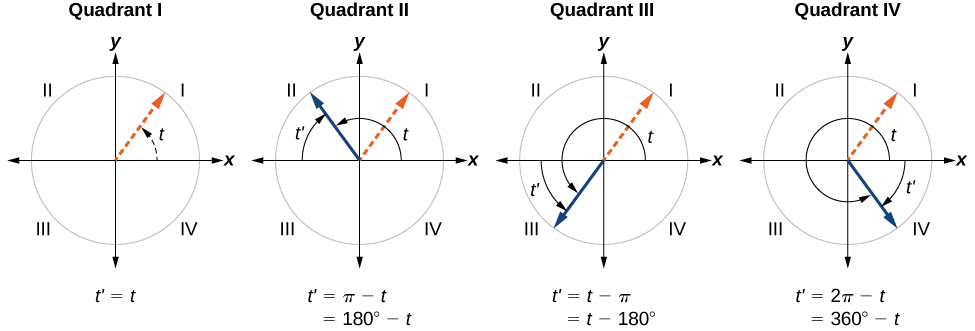
Finding an Angle Coterminal with an Angle of Measure Greater Than 360°
Find the least positive angle that is coterminal with an angle measuring 800°, where
Solution
An angle with measure 800° is coterminal with an angle with measure 800 − 360 = 440°, but 440° is still greater than 360°, so we subtract 360° again to find another coterminal angle: 440 − 360 = 80°.
The angle is coterminal with 800°. To put it another way, 800° equals 80° plus two full rotations, as shown in Figure 18.
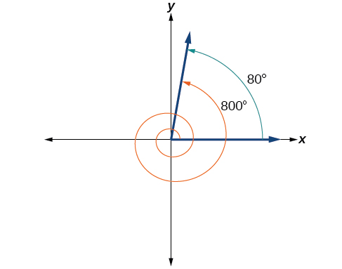
Finding an Angle Coterminal with an Angle Measuring Less Than 0°
Show the angle with measure −45° on a circle and find a positive coterminal angle such that 0° ≤ α < 360°.
Solution
Since 45° is half of 90°, we can start at the positive horizontal axis and measure clockwise half of a 90° angle.
Because we can find coterminal angles by adding or subtracting a full rotation of 360°, we can find a positive coterminal angle here by adding 360°:
We can then show the angle on a circle, as in Figure 19.
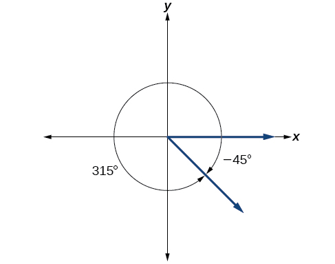
Finding Coterminal Angles Measured in Radians
We can find coterminal angles measured in radians in much the same way as we have found them using degrees. In both cases, we find coterminal angles by adding or subtracting one or more full rotations.
Finding Coterminal Angles Using Radians
Find an angle that is coterminal with where
Solution
When working in degrees, we found coterminal angles by adding or subtracting 360 degrees, a full rotation. Likewise, in radians, we can find coterminal angles by adding or subtracting full rotations of radians:
The angle is coterminal, but not less than so we subtract another rotation:
The angle is coterminal with as shown in Figure 20.
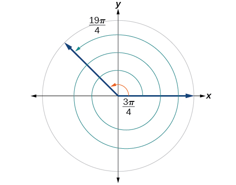
Determining the Length of an Arc
Recall that the radian measure of an angle was defined as the ratio of the arc length of a circular arc to the radius of the circle, From this relationship, we can find arc length along a circle, given an angle.
Finding the Length of an Arc
Assume the orbit of Mercury around the sun is a perfect circle. Mercury is approximately 36 million miles from the sun.
- ⓐ In one Earth day, Mercury completes 0.0114 of its total revolution. How many miles does it travel in one day?
- ⓑ Use your answer from part (a) to determine the radian measure for Mercury’s movement in one Earth day.
Solution
- ⓐLet’s begin by finding the circumference of Mercury’s orbit.
Since Mercury completes 0.0114 of its total revolution in one Earth day, we can now find the distance traveled:
- ⓑ Now, we convert to radians:
Finding the Area of a Sector of a Circle
In addition to arc length, we can also use angles to find the area of a sector of a circle. A sector is a region of a circle bounded by two radii and the intercepted arc, like a slice of pizza or pie. Recall that the area of a circle with radius can be found using the formula If the two radii form an angle of measured in radians, then is the ratio of the angle measure to the measure of a full rotation and is also, therefore, the ratio of the area of the sector to the area of the circle. Thus, the area of a sector is the fraction multiplied by the entire area. (Always remember that this formula only applies if is in radians.)
Finding the Area of a Sector
An automatic lawn sprinkler sprays a distance of 20 feet while rotating 30 degrees, as shown in Figure 23. What is the area of the sector of grass the sprinkler waters?
Solution
First, we need to convert the angle measure into radians. Because 30 degrees is one of our special angles, we already know the equivalent radian measure, but we can also convert:
The area of the sector is then
So the area is about
Use Linear and Angular Speed to Describe Motion on a Circular Path
In addition to finding the area of a sector, we can use angles to describe the speed of a moving object. An object traveling in a circular path has two types of speed. Linear speed is speed along a straight path and can be determined by the distance it moves along (its displacement) in a given time interval. For instance, if a wheel with radius 5 inches rotates once a second, a point on the edge of the wheel moves a distance equal to the circumference, or inches, every second. So the linear speed of the point is in./s. The equation for linear speed is as follows where is linear speed, is displacement, and is time.
Angular speed results from circular motion and can be determined by the angle through which a point rotates in a given time interval. In other words, angular speed is angular rotation per unit time. So, for instance, if a gear makes a full rotation every 4 seconds, we can calculate its angular speed as 90 degrees per second. Angular speed can be given in radians per second, rotations per minute, or degrees per hour for example. The equation for angular speed is as follows, where (read as omega) is angular speed, is the angle traversed, and is time.
Combining the definition of angular speed with the arc length equation, we can find a relationship between angular and linear speeds. The angular speed equation can be solved for giving Substituting this into the arc length equation gives:
Substituting this into the linear speed equation gives:
Water wheels have been used for thousands of years to transfer the power of flowing water to other devices. The image below depicts the design of the the 3rd century Roman water wheel in Hierapolis, a city in what is now Turkey. Water turned the wheel, which in turn rotated a crank connected to two saws used to cut blocks. These design elements were used in water wheel applications throughout the world, and even provided the underlying principle for the steam engine, invented about 1500 years later.
Finding Angular Speed
A water wheel, shown in Figure 24, completes 1 rotation every 5 seconds. Find the angular speed in radians per second.
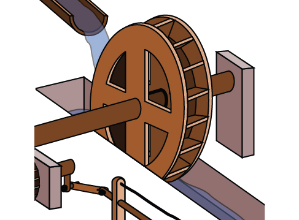
Solution
The wheel completes 1 rotation, or passes through an angle of radians in 5 seconds, so the angular speed would be radians per second.
Finding a Linear Speed
A bicycle has wheels 28 inches in diameter. A tachometer determines the wheels are rotating at 180 RPM (revolutions per minute). Find the speed the bicycle is traveling down the road.
Solution
Here, we have an angular speed and need to find the corresponding linear speed, since the linear speed of the outside of the tires is the speed at which the bicycle travels down the road.
We begin by converting from rotations per minute to radians per minute. It can be helpful to utilize the units to make this conversion:
Using the formula from above along with the radius of the wheels, we can find the linear speed:
Remember that radians are a unitless measure, so it is not necessary to include them.
Finally, we may wish to convert this linear speed into a more familiar measurement, like miles per hour.
Key Equations
| arc length | |
| area of a sector | |
| angular speed | |
| linear speed | |
| linear speed related to angular speed |
Key Concepts
- An angle is formed from the union of two rays, by keeping the initial side fixed and rotating the terminal side. The amount of rotation determines the measure of the angle.
- An angle is in standard position if its vertex is at the origin and its initial side lies along the positive x-axis. A positive angle is measured counterclockwise from the initial side and a negative angle is measured clockwise.
- To draw an angle in standard position, draw the initial side along the positive x-axis and then place the terminal side according to the fraction of a full rotation the angle represents. See Example 1.
- In addition to degrees, the measure of an angle can be described in radians. See Example 2.
- To convert between degrees and radians, use the proportion See Example 3 and Example 4.
- Two angles that have the same terminal side are called coterminal angles.
- We can find coterminal angles by adding or subtracting 360° or See Example 5 and Example 6.
- Coterminal angles can be found using radians just as they are for degrees. See Example 7.
- The length of a circular arc is a fraction of the circumference of the entire circle. See Example 8.
- The area of sector is a fraction of the area of the entire circle. See Example 9.
- An object moving in a circular path has both linear and angular speed.
- The angular speed of an object traveling in a circular path is the measure of the angle through which it turns in a unit of time. See Example 10.
- The linear speed of an object traveling along a circular path is the distance it travels in a unit of time. See Example 11.
Section Exercises
Verbal
Draw an angle in standard position. Label the vertex, initial side, and terminal side.
Solution
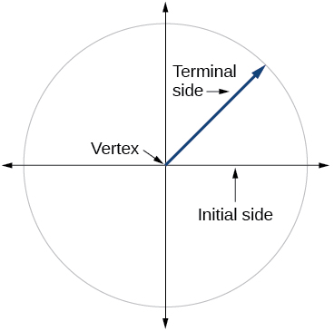
Explain why there are an infinite number of angles that are coterminal to a certain angle.
State what a positive or negative angle signifies, and explain how to draw each.
Solution
Whether the angle is positive or negative determines the direction. A positive angle is drawn in the counterclockwise direction, and a negative angle is drawn in the clockwise direction.
How does radian measure of an angle compare to the degree measure? Include an explanation of 1 radian in your paragraph.
Explain the differences between linear speed and angular speed when describing motion along a circular path.
Solution
Linear speed is a measurement found by calculating distance of an arc compared to time. Angular speed is a measurement found by calculating the angle of an arc compared to time.
Graphical
For the following exercises, draw an angle in standard position with the given measure.
30°
300°
Solution
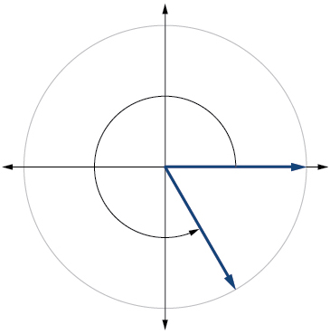
−80°
135°
Solution
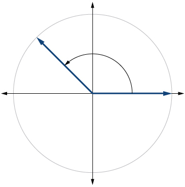
−150°
Solution
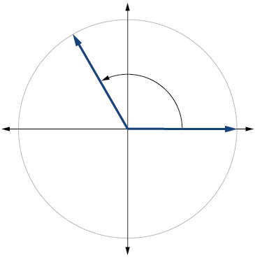
Solution
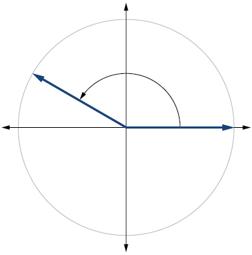
Solution
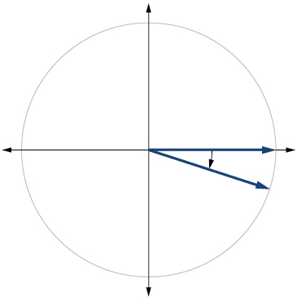
415°
For the following exercises, draw an angle in standard position with the given measure as well as a coterminal angle.
−120°
Solution
240°
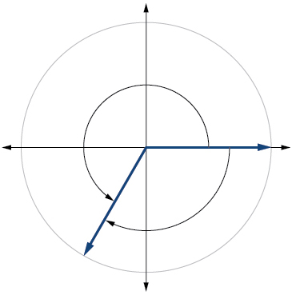
−315°
Solution
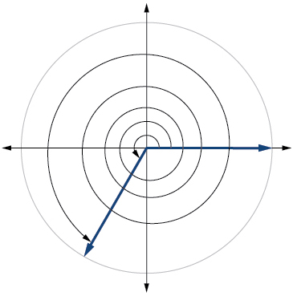
Solution
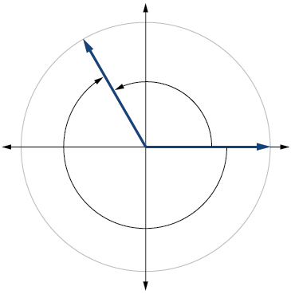
For the following exercises, refer to Figure 25. Round to two decimal places.
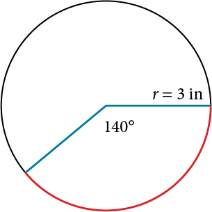
Find the arc length.
Find the area of the sector.
Solution
For the following exercises, refer to Figure 26. Round to two decimal places.
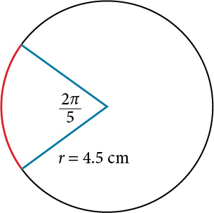
Find the arc length.
Find the area of the sector.
Solution
Algebraic
For the following exercises, convert angles in radians to degrees.
radians
radians
Solution
20°
radians
radians
Solution
60°
radians
radians
Solution
−75°
radians
For the following exercises, convert angles in degrees to radians.
90°
Solution
radians
100°
−540°
Solution
radians
−120°
180°
Solution
radians
−315°
150°
Solution
radians
For the following exercises, use to given information to find the length of a circular arc. Round to two decimal places.
Find the length of the arc of a circle of radius 12 inches subtended by a central angle of radians.
Find the length of the arc of a circle of radius 5.02 miles subtended by the central angle of
Solution
miles
Find the length of the arc of a circle of diameter 14 meters subtended by the central angle of
Find the length of the arc of a circle of radius 10 centimeters subtended by the central angle of 50°.
Solution
centimeters
Find the length of the arc of a circle of radius 5 inches subtended by the central angle of 220°.
Find the length of the arc of a circle of diameter 12 meters subtended by the central angle is 63°.
Solution
meters
For the following exercises, use the given information to find the area of the sector. Round to four decimal places.
A sector of a circle has a central angle of 45° and a radius 6 cm.
A sector of a circle has a central angle of 30° and a radius of 20 cm.
Solution
104.7198 cm2
A sector of a circle with diameter 10 feet and an angle of radians.
A sector of a circle with radius of 0.7 inches and an angle of radians.
Solution
0.7697 in2
For the following exercises, find the angle between 0° and 360° that is coterminal to the given angle.
−40°
−110°
Solution
250°
700°
1400°
Solution
320°
For the following exercises, find the angle between 0 and in radians that is coterminal to the given angle.
Solution
Solution
Real-World Applications
A truck with 32-inch diameter wheels is traveling at 60 mi/h. Find the angular speed of the wheels in rad/min. How many revolutions per minute do the wheels make?
A bicycle with 24-inch diameter wheels is traveling at 15 mi/h. Find the angular speed of the wheels in rad/min. How many revolutions per minute do the wheels make?
Solution
1320 rad 210.085 RPM
A wheel of radius 8 inches is rotating 15°/s. What is the linear speed the angular speed in RPM, and the angular speed in rad/s?
A wheel of radius 14 inches is rotating 0.5 rad/s. What is the linear speed the angular speed in RPM, and the angular speed in deg/s?
Solution
7 in./s, 4.77 RPM, 28.65 deg/s
A computer hard drive disc has diameter of 120 millimeters. When playing audio, the angular speed varies to keep the linear speed constant where the disc is being read. When reading along the outer edge of the disc, the angular speed is about 200 RPM (revolutions per minute). Find the linear speed.
When being burned in a writable CD-R drive, the angular speed of a CD varies to keep the linear speed constant where the disc is being written. When writing along the outer edge of the disc, the angular speed of one drive is about 4,800 RPM (revolutions per minute. Find the linear speed if the CD has diameter of 120millimeters.
Solution
A person is standing on the equator of Earth (radius 3960 miles). What are their linear and angular speeds?
Find the distance along an arc on the surface of Earth that subtends a central angle of 5 minutes . The radius of Earth is 3960 miles.
Solution
miles
Find the distance along an arc on the surface of Earth that subtends a central angle of 7 minutes The radius of Earth is miles.
Consider a clock with an hour hand and minute hand. What is the measure of the angle the minute hand traces in minutes?
Solution
Extensions
Two cities have the same longitude. The latitude of city A is 9 degrees north and the latitude of city B is 30 degree north. Assume the radius of the earth is 3960 miles. Find the distance between the two cities.
A city is located at 40 degrees north latitude. Assume the radius of the earth is 3960 miles and the earth rotates once every 24 hours. Find the linear speed of a person who resides in this city. Refer to Unit Circle: Sine and Cosine Functions for information on trigonometric functions.
Solution
794 miles per hour
A city is located at 75 degrees north latitude. Assume the radius of the earth is 3960 miles and the earth rotates once every 24 hours. Find the linear speed of a person who resides in this city. Refer to Unit Circle: Sine and Cosine Functions for information on trigonometric functions.
Find the linear speed of the moon if the average distance between the earth and moon is 239,000 miles, assuming the orbit of the moon is circular and requires about 28 days. Express answer in miles per hour.
Solution
2,234 miles per hour
A bicycle has wheels 28 inches in diameter. A tachometer determines that the wheels are rotating at 180 RPM (revolutions per minute). Find the speed the bicycle is travelling down the road.
A car travels 3 miles. Its tires make 2640 revolutions. What is the radius of a tire in inches?
Solution
11.5 inches
A wheel on a tractor has a 24-inch diameter. How many revolutions does the wheel make if the tractor travels 4 miles?
Analysis
Another way to think about this problem is by remembering that Because we can find that is